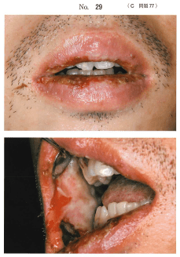

GVHD（移植片対宿主病）
概要
GVHD（graft-versus-host disease：移植片対宿主病）は、同種造血幹細胞移植後にドナー由来のTリンパ球がレシピエント（宿主）の組織を異物として攻撃する免疫反応である。
- 移植片（ドナー）の免疫細胞 → 宿主（レシピエント）の組織を攻撃
- 原因細胞 = ドナー由来のTリンパ球
分類
急性GVHD（移植後100日以内）
3つの標的臓器に症状が出現する。
- 皮膚：紅斑、発疹（通常最初に出現）
- 肝臓：黄疸、肝機能障害
- 消化管：下痢、腹痛、悪心
慢性GVHD（移植後100日以降）
全身の多臓器に及ぶ。口腔症状が重要。
- 皮膚：硬化性病変、色素沈着
- 口腔：扁平苔癬様病変、口腔乾燥症
- 眼：乾燥（ドライアイ）
- 肝臓：胆汁うっ滞
- 肺：閉塞性細気管支炎
口腔症状（慢性GVHD）
口腔病変は慢性GVHDの診断において重要な位置を占める。
扁平苔癬様病変（最頻出）
- 白色の網状・レース状病変が口腔粘膜に出現
- 慢性GVHDの唯一の診断的所見（diagnostic）とされる
- 病理組織像も口腔扁平苔癬と類似（リンパ球の帯状浸潤、基底層の変性）
- 食事や歯磨きで疼痛を生じる
口腔乾燥症
- 唾液腺がGVHDの標的となり、唾液分泌が低下
- Sjögren症候群に類似した症状
急性GVHD vs 慢性GVHDの比較
| 急性GVHD | 慢性GVHD | |
|---|---|---|
| 発症時期 | 移植後100日以内 | 移植後100日以降 |
| 標的臓器 | 皮膚、肝臓、消化管 | 全身多臓器 |
| 口腔症状 | 粘膜炎（非特異的） | 扁平苔癬様病変、口腔乾燥症 |
| 病態 | ドナー由来Tリンパ球がレシピエント組織を攻撃 | |
過去問
35歳の男性。口腔内の疼痛のため摂食困難を訴えて来院した。白血病のため造血幹細胞移植を受けたが、術後半年ころから同様の症状が繰り返されるようになったという。初診時の口腔内写真（別冊No.10）を別に示す。
症状の主な原因となるのはどれか。1つ選べ。

b レシピエントの血小板
c ドナー由来のBリンパ球
d ドナー由来のTリンパ球
e レシピエントの末梢血幹細胞
【解説】造血幹細胞移植後半年（100日以降）に口腔症状が繰り返されており、慢性GVHDが考えられる。GVHDの原因はドナー由来のTリンパ球がレシピエントの組織を異物として攻撃する免疫反応である。Bリンパ球ではなくTリンパ球が主役である点に注意。
GVHDと類似した組織像を示す口腔粘膜病変はどれか。1つ選べ。
b 口腔扁平苔癬
c 尋常性天疱瘡
d 壊死性潰瘍性口内炎
e ジフテリア性口内炎
【解説】慢性GVHDの口腔病変は扁平苔癬様病変を呈し、病理組織像も口腔扁平苔癬と類似する（リンパ球の帯状浸潤、基底層の変性）。
造血幹細胞移植後の慢性GVHDに特徴的な病態はどれか。2つ選べ。
b 顎骨壊死
c 口腔乾燥症
d 再発性アフタ
e 口腔扁平苔癬様病変
【解説】慢性GVHDに特徴的な口腔病態は口腔扁平苔癬様病変（診断的所見）と口腔乾燥症（唾液腺障害）の2つ。線維腫・顎骨壊死・再発性アフタはGVHDの特徴的所見ではない。
1か月前に悪性リンパ腫の治療のため同種造血幹細胞移植を受けた患者の初診時の口腔内写真（別冊No.29）を別に示す。初診時の血液学検査結果の一部を表に示す。
最も考えられるのはどれか。1つ選べ。

b 類天疱瘡
c 壊疽性口内炎
d 口腔扁平苔癬
e 全身性エリテマトーデス
【解説】同種造血幹細胞移植後1か月という病歴がGVHDを示唆する最大の手がかり。口腔扁平苔癬と類似した所見を呈するが、造血幹細胞移植後という背景からGVHDと診断する。扁平苔癬そのものではなく「扁平苔癬様病変」である点に注意。
疾患と口腔粘膜症状の組合せで正しいのはどれか。2つ選べ。
b 慢性GVHD ーーーーーーーーー 扁平苔癬様病変
c 尋常性天疱瘡 ーーーーーーーー Nikolsky現象
d Peutz-Jeghers症候群 ーーーーー 平滑舌
e Plummer-Vinson症候群 ーーーー 再発性アフタ
【解説】慢性GVHDの口腔粘膜症状は扁平苔癬様病変（b：正しい）。尋常性天疱瘡では棘融解によりNikolsky現象陽性（c：正しい）。手足口病は手掌・足底・口腔の水疱で地図状舌ではない。Peutz-Jeghers症候群は口唇の色素沈着。Plummer-Vinson症候群は鉄欠乏性貧血に伴う嚥下障害で平滑舌を呈する。